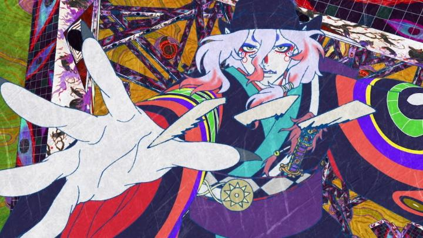

The second film of the new "Mononoke" film trilogy is out. Thank you Fantasia Film Festival for not requiring me to watch a shoddy Netflix stream to see it. "Mononoke the Movie - Chapter II - The Ashes of Rage" takes place one month after the events of the first movie. We're still at the Ooku (Inner Chambers), a prince's stately home of servants and concubines. The Medicine Seller is still hanging around outside, perhaps expecting another Mononoke to appear. Sure enough, one does. Politics are getting interesting within the household, when one particular favourite girl of the Prince appears to be pregnant with child. She's vain, and the subject of jealousy from the other women. More importantly, she's from a commoner background, and the elite officials running the household are concerned... what would happen if a commoner birthed a successor prince and tainted the bloodline? Quite simply, the child cannot be born, resulting in some dark machinations by the elite (possibly sensitive subject matter depending on the viewer), and triggering the vengance of a mouse-themed fire monster, burning the perpetrators alive. Can the Medicine Seller save the house? And will the new house manager even let him, a man, step inside this time? There's not too much to say about the movie if you've seen the first. Animation and visuals are still strikingly colourful. The pattern of the story remains the same as the first movie and the television series - the Medicine Seller needs to learn the secrets and confessions that explain the ghost before he can slay it. The characters from the first movie make appearances, however small. The story is a little better here, in that it's more straightforward as to what's happening and why, and has a stronger emotional core. However, it does just feel like a good (albiet, very good), extended episode from the tv show. There is one thing I feel missing from the first film: intrigue that extends beyond the film's runtime. In the first film, perhaps because of the scope of the Ooku house, it felt like there was so much left untouched, and at the end, it wasn't clear that everything was "resolved." In "The Ashes of Rage," the story wraps with a nice little bow, complete with stylistic fireworks in the sky. It's not clear that watching the first film was required to fully understand this movie, and it's not clear that a third movie is necessary (aside from a moving snake picture that teases the next film?). The only thing I'm still curious about is the basement temple where three great pillars stand, a setting that has yet to feature in the stories yet. Even the ending theme, which had such bite in the first film, is a bit more plain here (a cool jazzy JPop tune), even though sound design during the film is still powerful.  That lack of intrigue and reduced novelty doesn't completely nullify the fascination of this carefully controlled historical castle, or the entertainment of the story. "Mononoke the Movie - Chapter II - The Ashes of Rage" is still a great time, perhaps moreso because of how its self-contained. While the urgency isn't there this time, I am curious where the third and final film will go. And I'm curious on whether a Bluray release of the trilogy will ever come about... your move, Discotek.
- "Ani" More reviews can be found at : https://2danicritic.github.io/ Previous review: review_Mononoke Next review: review_Mononoke_the_Movie_-_Phantom_in_the_Rain